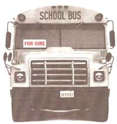

BOOTSTRAPS
If you have a vehicle and live out in the country, you can earn more than $10 an hour.
Country people get along just fine without city sewers or half-hour pizza delivery. Still, there are plenty of goods and services that must be provided to families, farms, and small businesses scattered across wide rural distances. One way to earn cash in the country is to service the spread-out rural "infrastructure"-driving motor routes delivering newspapers, students, and mail.
One commodity that requires timely delivery is the news. Maybe Dan Rather can supply big-picture news electronically, but nothing can replace the small-town daily or weekly newspaper. Advertising is the key. The farther from town a newspaper can peddle its wares, the larger its distribution map, and the more potential country-customers the salespeople have to entice. A paper will go to considerable lengths to maintain its rural distribution network-the keystone of which is the rural motor-route driver. If you have the (often peculiar) hours free, have a reliable vehicle, can perform routine maintenance and minor repairs on it, and are willing to drive country roads stuffing papers in delivery tubes, you can bring in a steady cash income.
Best paying are big-city daily papers, which are delivered farther afield than you might think. Less affluent and tighter with pay are the small-town dailies. Most dailies publish on all five weekdays and Saturday. Although many small-town papers deliver their weekday papers in the afternoon, television news programs are getting the jump on afternoon news. As a result, small-town papers are gradually moving toward morning delivery, to accompany morning coffee. Be prepared to work between midnight and the wee hours of the A.M.
Evaluate The Market
From a local store, buy copies of all the papers that serve your area. Tour the roads looking for plastic paper-delivery tubes on steel fence posts and tubes or hooks fastened to mailbox posts (it is illegal to put papers in mailboxes, so drivers fasten small hooks to the sides of posts and hang papers from them in plastic bags). Tubes come in an assortment of colors and have the paper's name and perhaps a sales message and telephone number embossed on the sides. The more tubes, the better-paying the route. Most delivery services pay drivers a combination of a mileage fee and a customer commission- $10 or so per paper drop plus about $.25/mile-or a lump-sum salary of a roughly equivalent amount.
Small commissions add up, and a customer density of 10 papers/mile pays $1.25/mile, which you can usually drive in five minutes or less-you could gross over $10/hour. A top route will run about 60 miles with 200 customers, and will gross over $200 each six-day week. It should take you under three hours to drive.
With a longer route, both pay and driving time are higher. If tubes are scattered thinly, the pay can be less-unless they belong to a major-city paper. Often, big papers pay generous mileage allowances or offer lump-sum contracts for routes which may be cash money losses for them, but which pay out by increasing the geographic coverage they can show to advertisers.
Getting Started
First, check the classified ads; few route drivers make a career of the part-time but demanding work and turnover is high. (Many papers are constantly advertising for drivers, especially in winter months.) Then call the circulation departments of papers serving your area and inquire after "motor routes." Some papers operate their own route system; others contract to a semi-independent delivery service or to a totally independent firm. Ask for an interview, even if there aren't any openings near your home, and be ready to accept any route that'll bring in money. You can always switch jobs as they open up.
At the interview, you'll have to convince the route supervisor that you're eager to do the work. Ask knowledgeable questions: Are drivers eligible for health-plan benefits or are they independent contractors who aren't eligible? What are commission and mileage rates, how long are the routes, and how many customers are there on them? Find out when and where you get papers (a lengthy commute can lose you time and money). Is there much time-consuming walking for hand-deliveries-say, in apartment buildings? How about bundle-drop routes, where drivers carry bound packs of papers to stores and drop them for youth carriers?
Don't expect to get rich. Delivery services depend heavily on semi-retirees who drive as much to get out of the house as for money, or laid-off workers. Don't expect much job security either. Papers need a continual flow of new customers; many in the business believe that eager new drivers bring in the most new customers. However, if a route supplies your cash needs, it may be worth the anxiety.
Once on the road, you are your own boss. If you maintain or increase your customer list, deliver papers on time, and keep delivery tubes in good order, you will keep your job.
Your Vehicle
The key to making money is a tough, cheap, easily-repaired vehicle.
Economically, it is best to buy a small, used, four-cylinder car or mini-truck without power accessories; it should also be common in your area (so parts are readily available at junk yards). Don't buy a new car or test-drive a new design. Front-wheel drive has better traction but is more costly to repair than rear-wheel drive. A clutch is cheaper to repair, but an automatic transmission is much less tiring on a stop-and-start route.
Look for a car model that is no longer being produced and has a poor reputation due to reliability problems in early model years, but that were corrected late in its life. One experienced driver recommends a late-model Chevy Chevette, an old-style rail-frame, rear-drive car with an indestructible Pontiac-made "Iron Duke" four-cylinder engine. Other good choices would be a post-1987 Ford Escort or Plymouth Horizon/Dodge Omni. A VW Rabbit diesel has an engine that gets 45+ MPG and will run for a half-million miles without major repairs. An older Honda Civic is a good choice as well.
All of these boxy little cars can be bought with some 60,000 miles (and-with good care-another 60,000 or more miles to go before the engine starts to wear significantly) for under $1,000. Try to find an automobile that has been driven on lengthy commutes rather than short, engine-destroying in-town runs.
Though their ride is corncob-rough, old Jeeps are the ideal route vehicle for hilly or snowy country.
THE SUNDAY CHORONICLE
Rabbits and Civics excepted, inexpensive imports-most with no frame per se, but "unibody" construction-aren't built for rugged North American roads or winter salt. Avoid four-wheel drive unless you really need it to drive in snow. Modern lightweight 4WD autos and trucks aren't up to route abuse. Subarus in particular are reputed to self-destruct soon after the warranty expires. Older Jeeps can be rebuilt forever-which is necessary, as they are notoriously repair-prone and have especially weak starters. Get one with an economical four-banger if you can. Though their ride is corncob-rough, old Jeeps will go anywhere and are the ideal route vehicle for hilly or snowy country.
You will be putting some 30,000 miles a year on the vehicle and should be able to change your own oil and filter (every month or 3,000 miles). Buy a set of ramps to get a small car up for service. You'll need a set of wrenches, a good heavy-duty jack and wheel-stud wrench, and one or more extra rims with good tires to keep you going while flats are fixed. Get a repair manual and learn to do as much as you can-to escape $50/hour mechanics fees.
Truck-fleet-style programmed preventive maintenance is a good precaution against unexpected breakdowns. Many drivers replace fanbelts, radiator hoses, fuel pumps, water pumps, timing chains, or belts and shock absorbers every 40,000 or 50,000 miles. A new distributor drive and a carburetor rebuild are in order at 60,000 to 70,000 miles. Keep fast-wearing brake pads/shoes, rotors/drums in top shape and replace brake lines and slave cylinders at 70,000 to 80,000 miles.
Keeping tires inflated to a pressure of 40 pounds (five pounds more than recommended) will prolong tire life substantially, at the cost of a slightly harder ride. Keep fluids topped up and the vehicle in good tune, replacing air and fuel filters, distributor caps/rotors, spark plugs and ignition wires, PCV valves, and other emission-control parts with about half the per-mile frequency suggested in your owner's manual. Keep front wheels and the front end in good balance; if your state lacks an annual inspection, have the front end checked periodically for worn bushings.
Honest Accounting
The Tax Code requires you to keep detailed records of miles driven and all legitimate business costs incurred; only then can you deduct expenses from income on Federal Income Tax Schedule C: "Business Income or Loss." Easiest is to use the vehicle for nothing but your route. You can take the IRS's standard 25 cents/mile deduction for route-miles driven, or itemize and deduct what you spent on gas, oil, repairs, interest, taxes, registration, insurance, and other costs. You'll need proof of expenditures if you are ever audited; pay as much as you can by check or credit card and keep cash receipts for gas, etc.
Take every legitimate deduction you can. Money paid your substitute is deductible as "subcontractor" expenses. Any toll calls you make, any special garments you buy, any office machines and supplies you buy (used exclusively for business) are deductible. In particular, don't assume that all income left after you buy gas is free to spend. You'll come to vehicle-replacement time with no money. You are permitted a reasonable depreciation/amortization charge, and may deduct the full cost of the vehicle less salvage value in as few as three years even if you run it forever. It is wisest to save 1/156 (3 years x 52 weeks) of the vehicle's cost each week and accumulate the money-only $6.50/week for a $1,000 car-in an interest-bearing savings account for eventual vehicle replacement. If you aren't familiar with small-business accounting, read a text book and study an income tax guide.
Driving
You'll be given one or two rides over the route by your predecessor or supervisor, then you'll be on your own. Some circulation supervisors number their tubes and may insist that you drive a set route. But most drivers have a free hand in deciding where on the route to start and in what order to leave papers. Once you establish a pattern, stick to it. Getting the paper is a high point for many customers who will watch for you; others get used to walking out for the paper at a given time. They may complain if you vary much. Getting to know complainers is the best solution; hand-deliver late papers along with an apology, and stay for coffee if invited. If making friends doesn't work, talk with experienced drivers about how they handle it.
Find one or two reliable substitute drivers and teach them the route as soon as possible. If you call on them at short notice, pay a bit more than an apportioned amount of your own check. Many house or farm-bound country people who don't want the burden of daily driving will jump at the chance to get out once or twice a week-while you go to the dentist or take a welcome day off.
Exercises
Be warned: paper-route driving provides uneven athletic exercise. Paper bundles are heavy; keep your back straight and lift with your legs. Driving a conventional left-steering vehicle on the right-hand side of the road, you will be delivering right-side-of-road papers out of the passenger window. After a few days of feeling sore, you'll develop an easy stretch rhythm. But, with so much sitting and lifting, you may develop back aches. Doing the "truck drivers workout" (the pelvic tilt) as you drive-tightening stomach muscles and pulling them in against your backward-arched spine, pressed into the seat back for successive counts of 10-will help.
Many drivers run along the left side of the road to deliver left-side-of-road papers out of the drivers' side window, or weave from side to side for tubes located on both margins of a road. Country police usually look the other way on less-traveled roads, even if weaving is against traffic laws. Best advice is: don't drive to endanger.
Experienced route drivers never quit rolling except for stop signs. Indeed because starting causes 99 percent of the wear on an engine and takes more gas than several minutes of slow idle, they don't even turn the car off from start of the route to the end-and run up a quarter-million miles on an engine before major repairs are needed. They locate tubes so they can shoot papers on the fly, relocating tubes out to the roadside to avoid turn-ins to driveways and other time-losing and transmission-and-brake-wearing drops.
However, if you try to stuff papers on the fly at a too-brisk speed, you may catch your hand in a paper tube or snag a sleeve on a stake and wrench your shoulder. Or, shooting it out fast (without any way to follow through), you can hyperextend an arm joint. Too many extensions or wrenches and you can develop serious joint and muscle problems in wrist, elbow, or shoulder. Take your time, slow to a near stop at each delivery so you can stuff the paper with an easy flowing motion.
One vehicle part that can wear quickly is your window regulator-made to be cranked up and down once or twice a day, not 200-so in cold weather, dress warmly and leave the windows down if you can. You make best time, use less fuel, and extract the least from your vehicle if you go at a quick but deliberate pace using brakes as little as possible. But be ready to stop and help round-up got-loose livestock or help get in a field of baled hay if rain is threatening. Stop and chat with your customers, too. The "paper boy or girl" is often the only stranger isolated country folks see in a day. And be alert if a lone or elderly customer fails to pick up the paper; route drivers are often the first to know if a senior has become ill.
Driving School Buses
Country kids need to be hauled to school and back, and every rural community depends on a corps of dedicated bus drivers. Unlike once-a-day paper route drivers, a school bus driver must drive short hauls two or three times a day. Typically, a driver will pick up and deliver high school or grade school students early in the morning, then deliver them home in the afternoon. The P.M. session of half-day kindergarden students must be picked up, and the morning session taken home at mid-day. Drivers operating small feeder vans serving students off the main bus routes may run the same route four or six times a day for students in all grades.
State regulations limit the time kids can be on a bus, so runs average an hour or less. Some school districts or independent bus lines pay drivers from the time they leave home till they get back. Other drivers are paid only for the time they carry students. Most are paid only for three hours or so a day. Still, the job eats up a day. A driver has to get the bus or van warmed up, drive from his/her home to the first pickup, around the route, and back home for each leg. If your other activities fit nicely into a five-hour mid-day time block, a school bus route may serve you well. If you are required to do the mid-day kindergarden run, your free time is reduced to a pair of two-hour time blocks, but your driving pay increases by an hour or so a day.
Unlike independent-contractor route drivers, employee drivers have no responsibility to maintain vehicles.
Pay rates vary around the country-from the $4.50 minimum in the South to $15/hour or more in areas near metropolitan centers in the Northeast. Expect about $7.50/hour on average. That's $15/day for five days a week, or $75/week for the school year.
Drivers aren't paid for school vacation days but get to spend the time with their families. Unless you land a job with summer school or a vacation day-school, there's no work in the summer either. Moms with school age kids, and farmers and their wives are the traditional drivers as they can fit cash-income production into their parenting, milking, or farm chores.
Unlike independent-contractor route drivers, employee-drivers have no responsibility to maintain their vehicle other than routine fluid checks, obtaining gas, keeping tires inflated, assuring that the vehicle and its safety equipment is in operating condition, and bringing the vehicle in for service if it begins to act up.
You'll need off-road parking for your bus or van, and you must be able to negotiate mud and and snow at any hour. Most drivers park right on the road, clearing brush and hardening the ground surface for an all-weather parking spot.
Requirements
Formal requirements are a good driving record, good health, and the ability and willingness to obtain the required licenses. Drivers of big buses must obtain a Class "A" trucker's license plus the new federal truckers' license. It takes some study if you've never operated a large truck before. You'll have to take a road test for the state license. Usually the bus line operator will provide training and help you get a license. In some states, feeder van operators can drive on a regular class "C" automobile license. In others, they need a special limited-passenger license that requires a written test but no road test or federal license. Informal, but essential requirements include a lot of patience and the ability to discipline unruly kids.
Route Contractor
Some school districts operate their own bus lines. Others subcontract to independent contractors who own and maintain the vehicles and hire drivers. A major bus company is a major enterprise, requiring hundreds of thousands of dollars in investment capital for buses, plus a maintenance shop, mechanics, and an office staff. But, you may want to investigate small-route subcontracts-say, running one or two vans to carry kids to a regional vocational school or a lift-equipped van to serve special-needs students. Federally-mandated "chapter" special-ed laws also require that an occasional student be driven to urban centers for specialized or individually tailored schooling. Often parents assume the chore, but the school district may hire a driver and provide a vehicle. Pay is low, but you may be able to use your own vehicle if it is reliable enough. In this case, you will receive a mileage allowance and can file a "Schedule C" tax form to take a legitimate tax deduction, reducing taxable income by vehicle-operating and maintenance expenses equal to the mileage fee.
Contracts for established, permanent routes are usually put out for public bid. Obtain the past several years' bid list from your school superintendent, run out the number, and see if you can underbid the competition. It's hard to pay yourself a living wage simply serving as manager of a little firm that operates only a few vans or a small bus or two. If you serve as both administrator and driver, you can usually do nicely. (A husband-wife team I know-she maintains the vehicles and he keeps the books-has subcontracted a two-van route for years; with it they've bought a small farm, put two kids through college.)
You will not be a carefree employee and you will have all the headaches of running a small business. You'll need enough working capital ($5,000 or more) to convince the school committee that you can satisfy the contract. The bid you tender should provide you a fair return on money invested, adequate pay for the administrative time you spend, as well as coverage for all your operating costs: gas, wages, repairs, debt service, legal and accounting fees, taxes and insurance, and an amortization fund to buy replacement vehicles every three years or so. Don't plan to refurbish used vehicles and run them for the second 100,000 miles. Buses run up miles fast, country roads are rough on suspensions and tires, and student safety comes first. Even if the vehicle has been maintained impeccably, school districts look askance at any school bus much over five years old and/or that is approaching 100,000 miles on the odometer. Plus, repair costs become exorbitant when you begin replacing transmissions and front end parts. In snow country and mountain dirt roads where four-wheel drive is a necessity, a sudden rash of repairs on an aging bus fleet can bankrupt you.
You will need a trained accountant to keep the books, compute taxes, and deal with employee compensation and other paperwork. Kids can't miss school and you will need an extra approved vehicle to serve as a substitute when a main bus is in the shop. And you must keep school buses in safe and reliable working condition.
You can perform routine service such as oil changes yourself, but you need a skilled, well-equipped and reliable truck mechanic/tow-truck operator who will make road calls immediately. You can pay yourself for any of the work you can do yourself-but don't undertake more than you are capable of. If you fail to fill contract requirements, you not only deprive children of their education, you may be asking for a lawsuit.
Warning: If you are a country newcomer and are seen as stealing a job from a neighbor or if you underbid a long-time contract-holder, you may gain enemies. So, do some political investigating first.
Postal Delivery Routes
Rural routes are driven by salaried post office employees. On under-25 mile routes, they may use government vehicles; for longer routes (typically 50 miles or under), drivers receive a salary plus a mileage allowance for use of their own vehicle. You get these jobs by taking competitive general-knowledge exams and serving as a substitute driver for a while. It may take years of now-and-then substituting. Rural route drivers are eligible for government benefits including a retirement pension.
Highway contract routes, often called star routes, are driven by independent contractors who needn't take an exam, but must submit the lowest bid, then buy and maintain their own vehicles. They receive only limited benefits above salary and mileage allowance. It's not all driving, either way you do it. Route drivers have to sort their mail, putting it into cubicles in the Post Office before going on the road.
Once out, they are required to post mail for customers and to hand-deliver packages that are too large to fit in the mailbox. And the work is six-days a week, federal holidays excepted. Most work from 8 A.M. to 2 P.M. at $10/hour, but the pay, the time required, and miles driven vary.
Enquire at your post office for dates of rural route driver exams and for information on bidding for highway contract routes. Though the P.O. is laying off office workers as they automate, there will always be a demand for good route drivers.
Like school bus routes, many star routes are considered by the community as the property of long established families. For instance, one route in my town has been in the same farming family for four generations (mail was originally delivered on horseback). Anyone who underbids this family will have a route to drive-and several enemies.
Bionote: J. Presley is a one-time corporate executive who traded New York City for a small country town where he shares his management expertise with local businesses and enjoys listening to commuting hour traffic reports from city radio-stations while he does the morning and afternoon barn chores.
|
 |
|
|